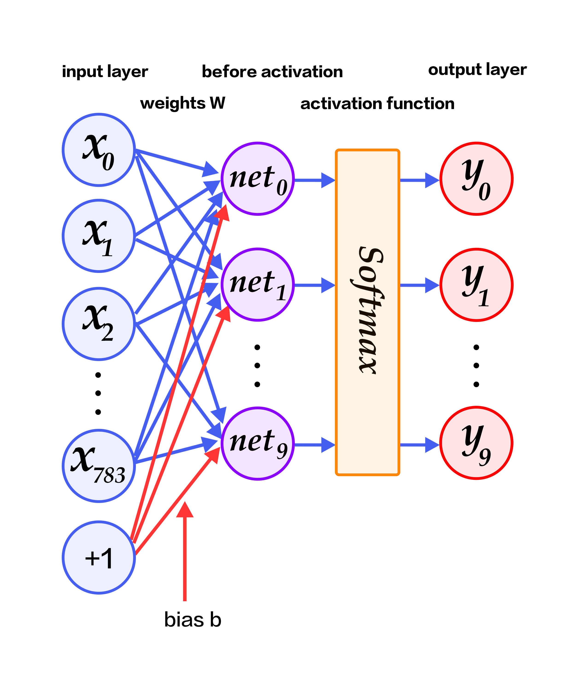
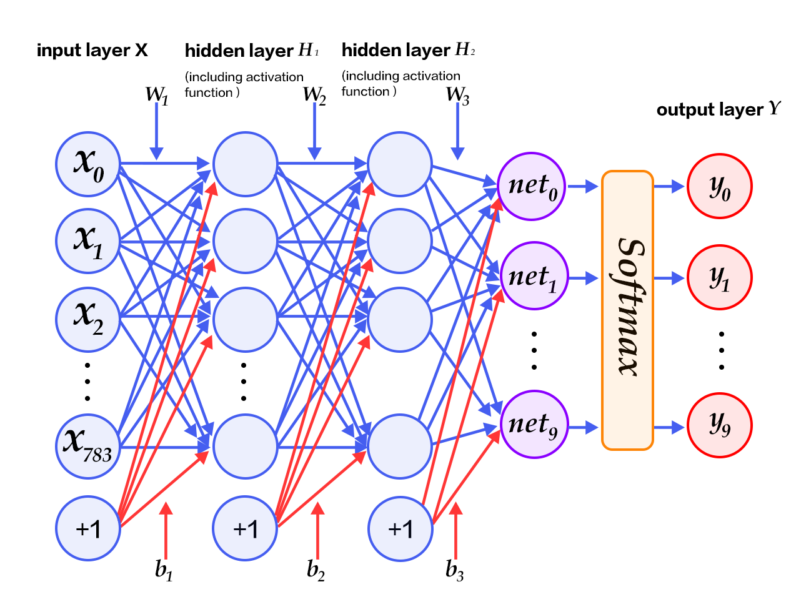

Recognize Digits
The source code for this tutorial is live at book/recognize_digits. For instructions on getting started with Paddle, please refer to installation instructions.
Introduction
When one learns to program, the first task is usually to write a program that prints “Hello World!”. In Machine Learning or Deep Learning, the equivalent task is to train a model to recognize hand-written digits on the dataset MNIST. Handwriting recognition is a classic image classification problem. The problem is relatively easy and MNIST is a complete dataset. As a simple Computer Vision dataset, MNIST contains images of handwritten digits and their corresponding labels (Fig. 1). The input image is a $28\times28$ matrix, and the label is one of the digits from $0$ to $9$. All images are normalized, meaning that they are both rescaled and centered.

Fig. 1. Examples of MNIST images
The MNIST dataset is created from the NIST Special Database 3 (SD-3) and the Special Database 1 (SD-1). The SD-3 is labeled by the staff of the U.S. Census Bureau, while SD-1 is labeled by high school students the in U.S. Therefore the SD-3 is cleaner and easier to recognize than the SD-1 dataset. Yann LeCun et al. used half of the samples from each of SD-1 and SD-3 to create the MNIST training set (60,000 samples) and test set (10,000 samples), where training set was labeled by 250 different annotators, and it was guaranteed that there wasn’t a complete overlap of annotators of training set and test set.
Yann LeCun, one of the founders of Deep Learning, have previously made tremendous contributions to handwritten character recognition and proposed the Convolutional Neural Network (CNN), which drastically improved recognition capability for handwritten characters. CNNs are now a critical concept in Deep Learning. From the LeNet proposal by Yann LeCun, to those winning models in ImageNet competitions, such as VGGNet, GoogLeNet, and ResNet (See Image Classification tutorial), CNNs have achieved a series of impressive results in Image Classification tasks.
Many algorithms are tested on MNIST. In 1998, LeCun experimented with single layer linear classifier, Multilayer Perceptron (MLP) and Multilayer CNN LeNet. These algorithms quickly reduced test error from 12% to 0.7% [1]. Since then, researchers have worked on many algorithms such as K-Nearest Neighbors (k-NN) [2], Support Vector Machine (SVM) [3], Neural Networks [4-7] and Boosting [8]. Various preprocessing methods like distortion removal, noise removal, and blurring, have also been applied to increase recognition accuracy.
In this tutorial, we tackle the task of handwritten character recognition. We start with a simple softmax regression model and guide our readers step-by-step to improve this model’s performance on the task of recognition.
Model Overview
Before introducing classification algorithms and training procedure, we provide some definitions:
- $X$ is the input: Input is a $28\times 28$ MNIST image. It is flattened to a $784$ dimensional vector. $X=\left (x_0, x_1, \dots, x_{783} \right )$.
- $Y$ is the output: Output of the classifier is 1 of the 10 classes (digits from 0 to 9). $Y=\left (y_0, y_1, \dots, y_9 \right )$. Each dimension $y_i$ represents the probability that the input image belongs to class $i$.
- $L$ is the ground truth label: $L=\left ( l_0, l_1, \dots, l_9 \right )$. It is also 10 dimensional, but only one dimension is 1 and all others are all 0.
Softmax Regression
In a simple softmax regression model, the input is fed to fully connected layers and a softmax function is applied to get probabilities of multiple output classes[9].
The input $X$ is multiplied by weights $W$, and bias $b$ is added to generate activations.
$$ y_i = \text{softmax}(\sum_j W_{i,j}x_j + b_i) $$
where $ \text{softmax}(x_i) = \frac{e^{x_i}}{\sum_j e^{x_j}} $
For an $N$-class classification problem with $N$ output nodes, an $N$ dimensional vector is normalized to $N$ real values in the range $[0,1]$, each representing the probability that the sample belongs to a certain class. Here $y_i$ is the prediction probability that an image is digit $i$.
In such a classification problem, we usually use the cross entropy loss function:
$$ \text{crossentropy}(label, y) = -\sum_i label_ilog(y_i) $$
Fig. 2 shows a softmax regression network, with weights in blue, and bias in red. +1 indicates bias is 1.

Fig. 2. Softmax regression network architecture
Multilayer Perceptron
The softmax regression model described above uses the simplest two-layer neural network. That is, it only contains an input layer and an output layer. So its regression ability is limited. To achieve better recognition results, consider adding several hidden layers [10] between the input layer and the output layer.
- After the first hidden layer, we get $ H_1 = \phi(W_1X + b_1) $, where $\phi$ is the activation function. Some common ones are sigmoid, tanh and ReLU.
- After the second hidden layer, we get $ H_2 = \phi(W_2H_1 + b_2) $.
- Finally, the output layer outputs $Y=\text{softmax}(W_3H_2 + b_3)$, the final classification result vector.
Fig. 3. shows a Multilayer Perceptron network, with the weights in blue, and the bias in red. +1 indicates that the bias is $1$.

Fig. 3. Multilayer Perceptron network architecture
Convolutional Neural Network
Convolutional Layer

Fig. 4. Convolutional layer
The Convolutional layer is the core of a Convolutional Neural Network. The parameters in this layer are composed of a set of filters or kernels. In the forward step, each kernel moves horizontally and vertically, we compute a dot product of the kernel and the input at the corresponding positions. Then, we add the bias and apply an activation function. The result is a two-dimensional activation map. For example, some kernel may recognize corners, and some may recognize circles. These convolution kernels may respond strongly to the corresponding features.
Fig. 4 is a dynamic graph of a convolutional layer, where depths are not shown for simplicity. Input is $W_1=5, H_1=5, D_1=3$. In fact, this is a common representation for colored images. $W_1$ and $H_1$ of a colored image correspond to the width and height respectively. $D_1$ corresponds to the 3 color channels for RGB. The parameters of the convolutional layer are $K=2, F=3, S=2, P=1$. $K$ is the number of kernels. Here, $Filter W_0$ and $Filter W_1$ are two kernels. $F$ is kernel size. $W0$ and $W1$ are both $3\times3$ matrix in all depths. $S$ is the stride. Kernels move leftwards or downwards by 2 units each time. $P$ is padding, an extension of the input. The gray area in the figure shows zero padding with size 1.
Pooling Layer

Fig. 5 Pooling layer
A Pooling layer performs downsampling. The main functionality of this layer is to reduce computation by reducing the network parameters. It also prevents overfitting to some extent. Usually, a pooling layer is added after a convolutional layer. Pooling layer can be of various types like max pooling, average pooling, etc. Max pooling uses rectangles to segment the input layer into several parts and computes the maximum value in each part as the output (Fig. 5.)
LeNet-5 Network

Fig. 6. LeNet-5 Convolutional Neural Network architecture
LeNet-5 is one of the simplest Convolutional Neural Networks. Fig. 6. shows its architecture: A 2-dimensional input image is fed into two sets of convolutional layers and pooling layers, this output is then fed to a fully connected layer and a softmax classifier. The following three properties of convolution enable LeNet-5 to better recognize images than Multilayer fully connected perceptrons:
- 3D properties of neurons: a convolutional layer is organized by width, height and depth. Neurons in each layer are connected to only a small region in the previous layer. This region is called the receptive field.
- Local connection: A CNN utilizes the local space correlation by connecting local neurons. This design guarantees that the learned filter has a strong response to local input features. Stacking many such layers generates a non-linear filter that is more global. This enables the network to first obtain good representation for small parts of input and then combine them to represent a larger region.
- Sharing weights: In a CNN, computation is iterated on shared parameters (weights and bias) to form a feature map. This means all neurons in the same depth of the output respond to the same feature. This allows detecting a feature regardless of its position in the input and enables translation equivariance.
For more details on Convolutional Neural Networks, please refer to this Stanford open course and this Image Classification tutorial.
List of Common Activation Functions
-
Sigmoid activation function: $ f(x) = sigmoid(x) = \frac{1}{1+e^{-x}} $
-
Tanh activation function: $ f(x) = tanh(x) = \frac{e^x-e^{-x}}{e^x+e^{-x}} $
In fact, tanh function is just a rescaled version of the sigmoid function. It is obtained by magnifying the value of the sigmoid function and moving it downwards by 1.
- ReLU activation function: $ f(x) = max(0, x) $
For more information, please refer to Activation functions on Wikipedia.
Data Preparation
PaddlePaddle provides a Python module, paddle.dataset.mnist, which downloads and caches the MNIST dataset. The cache is under /home/username/.cache/paddle/dataset/mnist:
| File name | Description | Size |
|---|---|---|
| train-images-idx3-ubyte | Training images | 60,000 |
| train-labels-idx1-ubyte | Training labels | 60,000 |
| t10k-images-idx3-ubyte | Evaluation images | 10,000 |
| t10k-labels-idx1-ubyte | Evaluation labels | 10,000 |
Model Configuration
A PaddlePaddle program starts from importing the API package:
import paddle.v2 as paddle
We want to use this program to demonstrate three different classifiers, each defined as a Python function:
- Softmax regression: the network has a fully-connection layer with softmax activation:
def softmax_regression(img):
predict = paddle.layer.fc(input=img,
size=10,
act=paddle.activation.Softmax())
return predict
- Multi-Layer Perceptron: this network has two hidden fully-connected layers, one with ReLU and the other with softmax activation:
def multilayer_perceptron(img):
hidden1 = paddle.layer.fc(input=img, size=128, act=paddle.activation.Relu())
hidden2 = paddle.layer.fc(input=hidden1,
size=64,
act=paddle.activation.Relu())
predict = paddle.layer.fc(input=hidden2,
size=10,
act=paddle.activation.Softmax())
return predict
- Convolution network LeNet-5: the input image is fed through two convolution-pooling layers, a fully-connected layer, and the softmax output layer:
def convolutional_neural_network(img):
conv_pool_1 = paddle.networks.simple_img_conv_pool(
input=img,
filter_size=5,
num_filters=20,
num_channel=1,
pool_size=2,
pool_stride=2,
act=paddle.activation.Tanh())
conv_pool_2 = paddle.networks.simple_img_conv_pool(
input=conv_pool_1,
filter_size=5,
num_filters=50,
num_channel=20,
pool_size=2,
pool_stride=2,
act=paddle.activation.Tanh())
fc1 = paddle.layer.fc(input=conv_pool_2,
size=128,
act=paddle.activation.Tanh())
predict = paddle.layer.fc(input=fc1,
size=10,
act=paddle.activation.Softmax())
return predict
PaddlePaddle provides a special layer layer.data for reading data. Let us create a data layer for reading images and connect it to a classification network created using one of above three functions. We also need a cost layer for training the model.
paddle.init(use_gpu=False, trainer_count=1)
images = paddle.layer.data(
name='pixel', type=paddle.data_type.dense_vector(784))
label = paddle.layer.data(
name='label', type=paddle.data_type.integer_value(10))
predict = softmax_regression(images)
#predict = multilayer_perceptron(images) # uncomment for MLP
#predict = convolutional_neural_network(images) # uncomment for LeNet5
cost = paddle.layer.classification_cost(input=predict, label=label)
Now, it is time to specify training parameters. In the following Momentum optimizer, momentum=0.9 means that 90% of the current momentum comes from that of the previous iteration. The learning rate relates to the speed at which the network training converges. Regularization is meant to prevent over-fitting; here we use the L2 regularization.
parameters = paddle.parameters.create(cost)
optimizer = paddle.optimizer.Momentum(
learning_rate=0.1 / 128.0,
momentum=0.9,
regularization=paddle.optimizer.L2Regularization(rate=0.0005 * 128))
trainer = paddle.trainer.SGD(cost=cost,
parameters=parameters,
update_equation=optimizer)
Then we specify the training data paddle.dataset.movielens.train() and testing data paddle.dataset.movielens.test(). These two methods are reader creators. Once called, a reader creator returns a reader. A reader is a Python method, which, once called, returns a Python generator, which yields instances of data.
shuffle is a reader decorator. It takes in a reader A as input and returns a new reader B. Under the hood, B calls A to read data in the following fashion: it copies in buffer_size instances at a time into a buffer, shuffles the data, and yields the shuffled instances one at a time. A large buffer size would yield very shuffled data.
batch is a special decorator, which takes in reader and outputs a batch reader, which doesn’t yield an instance, but a minibatch at a time.
lists = []
def event_handler(event):
if isinstance(event, paddle.event.EndIteration):
if event.batch_id % 100 == 0:
print "Pass %d, Batch %d, Cost %f, %s" % (
event.pass_id, event.batch_id, event.cost, event.metrics)
if isinstance(event, paddle.event.EndPass):
result = trainer.test(reader=paddle.batch(
paddle.dataset.mnist.test(), batch_size=128))
print "Test with Pass %d, Cost %f, %s\n" % (
event.pass_id, result.cost, result.metrics)
lists.append((event.pass_id, result.cost,
result.metrics['classification_error_evaluator']))
trainer.train(
reader=paddle.batch(
paddle.reader.shuffle(
paddle.dataset.mnist.train(), buf_size=8192),
batch_size=128),
event_handler=event_handler,
num_passes=100)
During training, trainer.train invokes event_handler for certain events. This gives us a chance to print the training progress.
# Pass 0, Batch 0, Cost 2.780790, {'classification_error_evaluator': 0.9453125}
# Pass 0, Batch 100, Cost 0.635356, {'classification_error_evaluator': 0.2109375}
# Pass 0, Batch 200, Cost 0.326094, {'classification_error_evaluator': 0.1328125}
# Pass 0, Batch 300, Cost 0.361920, {'classification_error_evaluator': 0.1015625}
# Pass 0, Batch 400, Cost 0.410101, {'classification_error_evaluator': 0.125}
# Test with Pass 0, Cost 0.326659, {'classification_error_evaluator': 0.09470000118017197}
After the training, we can check the model’s prediction accuracy.
# find the best pass
best = sorted(lists, key=lambda list: float(list[1]))[0]
print 'Best pass is %s, testing Avgcost is %s' % (best[0], best[1])
print 'The classification accuracy is %.2f%%' % (100 - float(best[2]) * 100)
Usually, with MNIST data, the softmax regression model achieves an accuracy around 92.34%, the MLP 97.66%, and the convolution network around 99.20%. Convolution layers have been widely considered a great invention for image processing.
Conclusion
This tutorial describes a few basic Deep Learning models using Softmax regression, Multilayer Perceptron Network, and Convolutional Neural Network. The subsequent tutorials will derive more sophisticated models from these. It is crucial to understand these models for future learning. When our model evolves from a simple softmax regression to slightly complex Convolutional Neural Network, the recognition accuracy on the MNIST data set achieves large improvement in accuracy. This is due to the Convolutional layers’ local connections and parameter sharing. While learning new models in the future, we encourage the readers to understand the key ideas that lead a new model to improve the results of an old one. Moreover, this tutorial introduces the basic flow of PaddlePaddle model design, which starts with a dataprovider, a model layer construction, and finally training and prediction. Readers can leverage the flow used in this MNIST handwritten digit classification example and experiment with different data and network architectures to train models for classification tasks of their choice.
References
- LeCun, Yann, Léon Bottou, Yoshua Bengio, and Patrick Haffner. “Gradient-based learning applied to document recognition.” Proceedings of the IEEE 86, no. 11 (1998): 2278-2324.
- Wejéus, Samuel. “A Neural Network Approach to Arbitrary SymbolRecognition on Modern Smartphones.” (2014).
- Decoste, Dennis, and Bernhard Schölkopf. “Training invariant support vector machines.” Machine learning 46, no. 1-3 (2002): 161-190.
- Simard, Patrice Y., David Steinkraus, and John C. Platt. “Best Practices for Convolutional Neural Networks Applied to Visual Document Analysis.” In ICDAR, vol. 3, pp. 958-962. 2003.
- Salakhutdinov, Ruslan, and Geoffrey E. Hinton. “Learning a Nonlinear Embedding by Preserving Class Neighbourhood Structure.” In AISTATS, vol. 11. 2007.
- Cireşan, Dan Claudiu, Ueli Meier, Luca Maria Gambardella, and Jürgen Schmidhuber. “Deep, big, simple neural nets for handwritten digit recognition.” Neural computation 22, no. 12 (2010): 3207-3220.
- Deng, Li, Michael L. Seltzer, Dong Yu, Alex Acero, Abdel-rahman Mohamed, and Geoffrey E. Hinton. “Binary coding of speech spectrograms using a deep auto-encoder.” In Interspeech, pp. 1692-1695. 2010.
- Kégl, Balázs, and Róbert Busa-Fekete. “Boosting products of base classifiers.” In Proceedings of the 26th Annual International Conference on Machine Learning, pp. 497-504. ACM, 2009.
- Rosenblatt, Frank. “The perceptron: A probabilistic model for information storage and organization in the brain.” Psychological review 65, no. 6 (1958): 386.
- Bishop, Christopher M. “Pattern recognition.” Machine Learning 128 (2006): 1-58.
This tutorial is contributed by PaddlePaddle, and licensed under a Creative Commons Attribution-NonCommercial-ShareAlike 4.0 International License.